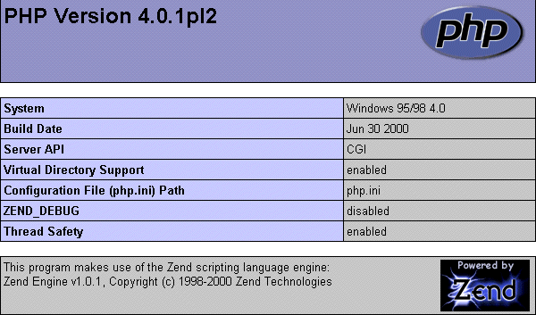

| Introduction au PHP |
| Table des matieres : |
I ) Introduction
II ) Installation :
A ) Installation
sous Windows 9x
B ) Installation
sous UNIX
C ) Test de l'installation
II ) Notions de bases :
A ) Syntaxe de
base
B ) Les commentaires
C ) Hello World
:) !
III ) Les types de données :
A ) Chaines de caracteres
B ) Les tableaux
IV ) Les variables :
A ) Opérations sur
les variables
B ) Opérations sur
les chaines
C ) Les variables extérieures
:
1 ) Les
variables de formulaires
2 ) Les
variables d'environnement
V ) Les structures de controles :
A ) L'instruction if
B ) L'instruction else
C ) L'instruction elseif
VI ) Les boucles :
A ) La boucle while
B ) La boucle for
VII ) Quelques exemples commentés ...
A ) Afficher la date
B ) Compteur de visite
C ) Créer une board
VIII ) En savoir plus sur le PHP
IX ) Conclusion ...
| Introduction : |
PHP est un acronyme pour 'Personal Home Page'. C'est en fait un language de script assez récent (la version 4 vient de sortir). La syntaxe est inspirée de différents languages, tels que le Perl, le Java ou encore le C/C++. Le PHP permet de créer des pages web dynamiques, en créant une interaction entre l'utilisateur et le serveur. En effet, comme tout autres CGI (Common Gateway Interface), le PHP s'execute du coté du serveur et non du coté client.
Si vous voulez dévelloper vos pages web en PHP, il vous faudra donc trouver un hébergeur supportant ce module (comme http://www.skreel.org). Mais étant donné que vous n'avez surement pas tous une connexion de type "cable", et dans le but de vous permettre de tester vos script sur votre propre systeme, il est très recommandé d'y installer un serveur. Pour ma part j'utilise Apache, dont vous pouvez télécharger la dernière version sur http://www.apache.org.
| Installation sous Windows 9x : |
PHP est disponible sur tous les OS. Pour pouvoir l'utiliser en local, vous devez disposer d'un serveur comme Apache, ainsi que du module PHP, disponible sur http://www.php.net. Note : certains points de cette installation sont tirées de la documentation officielle.
Une fois que vous avez téléchargé le fichier de distribution, il faut l'extraire dans un dossier de votre choix comme par exemple c:\php\. Maintenant copiez le fichier php-dist.ini dans c:\windows, puis renommez le en php.ini. Editez ce fichier, et faites les modifications suivantes :
Maintenant que la configuration de votre fichier php.ini est terminée, il faut configurer Windows. Pour ce faire, cliquez sur Demarrer, puis Executer, et tapez Regedit. Il s'agit de la base de registre de votre systeme. Nous allons y apporter quelques modifications...
ATTENTION : En modifiant la base de registre de Windows, vous pouvez créer une ou plusieurs erreurs qui risquent de rendre votre systeme instable, voir même inutilisable. Je vous recommande donc de faire une sauvegarde avant de procéder à une quelconque modification. En cas de problème, ce sera vous et vous seul, le responsable.
L'installation est maintenant presque terminée. Il ne reste plus qu'à configurer votre serveur Apache 1.3.x pour qu'il puisse utiliser le module PHP. Pour ce faire, vous devez éditer votre fichier htpd.conf. Allez à la section Script Alias, et rajoutez les lignes suivantes :
ScriptAlias /php/ "c:/chemin_du_dossier_php/"
AddType application/x-httpd-php .php
AddType application/x-httpd-php .php3
AddType application/x-httpd-php .php4
AddType application/x-httpd-php .phtml
Action application/x-httpd-php "/php/php.exe"
Après cette étape, l'installation est terminée, et vous pouvez enfin vous lancer dans le dévellopement de vos script PHP. Pour plus de détails, vous pouvez vous reporter à la documentation Apache (Apache Docs).
| Installation sous UNIX : |
PHP est disponible sur tous les OS. Pour pouvoir l'utiliser en local, vous devez disposer d'un serveur comme Apache, ainsi que du module PHP, disponible sur http://www.php.net. Note : certains points de cette installation sont tirées de la documentation officielle.
1. gunzip apache_1.3.x.tar.gz
2. tar xvf apache_1.3.x.tar
3. gunzip php-4.0.x.tar.gz
4. tar xvf php-4.0.x.tar
5. cd apache_1.3.x
6. ./configure --prefix=/www
7. cd ../php-4.0.x
8. ./configure --with-mysql --with-apache=../apache_1.3.x --enable-track-vars
9. make
10. make install
11. cd ../apache_1.3.x
12. ./configure --prefix=/www --activate-module=src/modules/php4/libphp4.a
13. make
14. make install
A la place de cette étape, vous pouvez simplement écraser le binaire httpd. Assurez-vous d'avoir bien arrÆté le demon d'abord.
15. cd ../php-4.0.x
16. cp php4.ini-dist /usr/local/lib/php4.ini
Vous pouvez éditer le fichier de configuration /usr/local/lib/php3.ini. Si vous préférez installer le fichier dans un autre répertoire, il faut utiliser l'option de configuration --with-config-file-path=/path à l'étape 8.
17. Editez le fichier de configuration apache httpd.conf or srm.conf et ajoutez :
AddType application/x-httpd-php4 .php4
Ici, il faut choisir l'extension que vous souhaitez donner au fichier php. '.php4' est simplement celle que nous suggérons.
18. Utilisez la procédure normale afin de démarrer le serveur Apache. (Vous devez impérativement arrêter et redémarrer le serveur Apache, et pas seulement le relancer à l'aide d'un signal HUP ou USR1).
Il y a deux moyens de configurer PHP. Utilisations du script "setup" qui est fourni avec la distribution PHP. Ce script vous pose une serie de question (comme le script d'installation de PHP/FI 2.0) et lance le script "configure" à la fin. Afin de lancer le script, tapez ./setup.
Ce script va aussi créer un fichier appelé "do-conf", qui contient les options de configuration. Vous pouvez éditer ce fichier afin de modifier certaines options sans avoir a réexécuter la totalité du script "setup". Dans ce cas là, tapez ./do-conf afin de lancer le script "configure" avec les nouvelles options.
Lancez le script "configure" à la main. Pour voir toutes les options de configuration disponible, tapez ./configure --help.
| Test de l'installation : |
|  | Pour vérifier que PHP est
bien installé sur votre système, vous pouvez faire un test. Créez un
fichier info.php et mettez y le code suivant :
<?php phpinfo() ?> Sauvegardez ce fichier dans votre répertoire htdocs, et allez à l'url http://127.0.0.1/info.php. Si l'installation est réussi, vous devriez voir une page semblable à l'image de gauche ... Si ce n'est pas le cas, c'est que vous avez sûrement mal configuré le fichier php.ini ou bien le fichier httpd.conf. Revoyez les et réesayez à nouveau. |
| Syntaxe de base : |
Ou comment définir un script PHP dans mon code HTML ? Le PHP étant un language de script, il peut être défini par les traditionnels tags HTML <script language="php"></script>. Mais vous pouvez aussi définir les type de tags pour le code php. Ainsi si vous choisissez l'option 'short_tags', vous pourrez intégrer du code PHP grâce aux tags <? et ?>.
De meme, si vous activés l'option 'asp_tags', vous pourrez intégrer du code PHP grâce aux balises ASP, à savoir <% et %>. Sachez tout de même que l'option par défaut pour définir un script PHP est d'utiliser les marqueurs <?php et ?>. Cependant rien ne vous empêche d'utiliser les autres.
| Les commentaires : |
Pour les débutants qui ne comprenne pas l'intérêt de commenté un code source, je vais rapidement leur montrer que ça peut s'avérer très utile. En effet, même si il est vrai que lorsque on débute on ne fait pas de scripts de 100 lignes, lorsque l'on commence à connaître les bases du PHP, on arrive très vite à cette "limite". Aisni le code devient vaste et il devient d'autant plus simple de ne plus ce rappeler à quoi sert telle ou telle instruction. C'est pourquoi je recommande de toujours commenter un minimum ses scripts.
Il faut savoir que en PHP, les commentaires existent sous plusieurs formes. En effet, nous avons vu que le PHP s'inspirait d'autre language comme le Perl ou le C/C++, il est donc normal que l'on trouve des ressemblances au niveau des commentaires :
// Ceci est un commentaire PHP similaires à ceux du C++
/* Tandis que celui ci est un commentaire semblable au C */
# Et ceci est un commentaire ressemblant au Perl :)
| Hello World :) ! |
Je sens que vous êtes impatients de commencer à coder, nous allons donc voir le fameux Hello World :) ! Incluez le code source suivant dans un fichier; et sauvegardez le sous hello.php :
<?php
echo "Hello World !";
?>
Lancez votre serveur Apache, et consultez la page hello.php. Vous devriez voir le message Hello World ! s'afficher à l'écran.
Un script php est toujours délimité par les balises <? et ?> comme nous l'avons vu plus haut. De plus l'affichage à l'écran se fait grâce à la fonction echo. Enfin, comme en Perl ou en C, une ligne se termine toujours par un point-virgule. Il faut savoir que le code source d'un script php n'est pas visible depuis votre navigateur, car le script est executé du coté serveur et non du coté client. Ainsi si vous affichez la source du précédent script, vous ne verrez que ça :
<html><body> Hello World ! </html></body>
| Les types de données : |
En PHP, les types de données les plus utilisés sont :
| Les chaines de caracteres : |
|
Comme nous l'avons vu plus haut, les chaines de
caractere se déclarent ainsi : $msg = "Salut";. Vous pouvez
aussi utiliser des caractere d'échappement, pour 'mettre en forme'
votre texte. Ceux ci sont les même que en C (voyez le tableau de droite).
Sachez que pour afficher les variables, et non le contenu de celle ci, il faut mettre des simple guillemet en utilisant la fonction echo. |
|
| Les tableaux : |
Les tableaux sont très important à maitriser en PHP, car ce language est souvent lié à des bases de données telles que MySQL. Ces bases de données retournent plusieurs valeurs, et généralement sous forme de tableau. Les tableaux 'classiques' sont les mêmes que en C. Le premier élément est donc (comme en C) l'élément 0. Voici comment tréer un tableau :
$site[0] = "Phpfrance";
$site[1] = "Skreel";
$site[2] = "NPK";
Je pense que l'exemple ci dessus est assez clair. Vous pouvez afficher le contenu de la Nieme valeur du tableau en affichant la valeur de $tab[N], grace à la fonction echo. Sachez tout de même qu'il existe un autre type de tableau, appelé tableau à deux dimensions. Cependant je ne m'attarderai pas sur ce type de tableau, donc veuillez consulter la doc officiel :)....
| Opérations sur les variables : |
En PHP, les variables sonts déclarées par le signe '$'. Elles servent à stocker des données dans le script, pour les réutiliser plus tard. Ainsi si nous avons une variable A et une variable B, on peut éffectuer sur celle ci diverses opérations :
<?php
/* Definition des variables */
$a = 2;
$b = 4;
/* Addition */
$addition = $a + $b // $addition vaut 6
/* Soustraction */
$soustraction = $b - $a // $soustraction vaut 2
/* Multiplication */
$multi = $a * $b // $multi vaut 8
/* Division */
$div = $b / $a // $div vaut 2
?>
Note : comme en C ou en Perl, vous pouvez incrémenter la valeur d'une variable de 1 en écrivant : $variable++;. Dans ce ca la, si $variable valant 123, elle vaudra maitenant 124. De même, vous pouvez la décrémenter en faisant : $variable--;
| Opérations sur les chaines : |
En PHP, vous pouvez aussi faire des 'opérations' sur les chaînes de caracteres. Un petit exemple vaut mieux qu'un long discours. Ici, apres l'opération, $b contient "Vive medgi :)" :
<?
$a = "Vive me";
$b = $a . "dgi :)";
// $b contient maintenant "Vive medgi :)"
?>
| Les variables de formulaires : |
Supposons que nous voulons créer un moteur de recherche, pour accroitre l'interactivité de notre site... Nous aurions donc un formulaire comme celui ci :
| FORM ACTION="search.php" METHOD=POST> Rechercher : <INPUT TYPE="text" NAME="search" SIZE=25 MAXLENGTH=40><p> Catégorie : <SELECT NAME="categ"> <OPTION VALUE="01"> 01 <OPTION VALUE="02"> 02 <OPTION VALUE="03"> 03 <OPTION VALUE="04"> 04 <OPTION VALUE="05"> 05 </SELECT> <INPUT TYPE="submit" VALUE="[ Rechercher ]"></FORM> |
Note le formulaire ci dessus ne sers à rien, c'était juste pour vous montrer
de quoi je parlais. Si vous le remplissez quand même. En envoyant ce formulaire,
le mots clé que vous aurez tapé sera stocké dans la variable $search et
la catégorie choisi sera, elle, stockée dans la variable $categ.
Ainsi on peut imaginer que ces variables seront lues par le script php, et elle seront cherchées dans la base de donnée ensuite. Puis le script interpretera les réponse de MySQL et affichera les résultats...
| Les variables d'environnement : |
Pour reprendre l'exemple, précédent, sachez que vous pourrez aussi avoir acces à ces variable dans search.php, grace aux variables d'environnement, comme $HTTP_POST_VARS. Ainsi si on veut trouver la valeur de $categ et la copié dans $test, on pourra faire ceci :
$test = $HTTP_POST_VARS=["categ"];
NOTE : si la méthode d'envoie de formulaire était POST, cet exemple marchera. Sinon, il faudra utiliser la variable $HTTP_GET_VARS. De plus, pour avoir recours à ces variables, il faut que la fonctionnalitée 'track_vars' soit activée dans votre fichier de configuration php (par exemple php.ini). Pour l'activer directement dans le script, insérez juste cette ligne : <? php_track_vars ?>
Les variables d'environnement sont en fait des variables 'prédéfinies' de PHP. Ainsi la variable $REMOTE_ADDR par exemple, contient l'adresse IP du client. Pour obtenir la liste complete de ces variables, faites ceci : <?php phpinfo() ?>
| L'instruction if : |
L'instruction if (si en francais...) est très utile pour controler des resultats. La syntaxe est simple : if(condition est vraie) { commande }. Ainsi pour comparer deux variable on aura quelquechose comme ca :
if ($a > $b) {
print "a est supérieur à b"; }
De meme on peut combiner les if avec des opérateur logique tel que 'or' ou encore 'and'. De ce fait, nous pourrions émettre plusieurs conditions à vérifier :
if (($a == $b) and ($b == 7)) {
print "a et b valent 7"; }
| L'instruction else : |
L'instruction else (sinon), est toujours utilisée après l'instruction IF. EN effet, celle-ci permet de d'effecuter des commandes, dans le cas ou la condition IF n'est pas remplie (False). Ainsi nous pourrions avoir un code comme celui ci :
<?php
if($a > 0) {
echo '$a est supérieur a 0'; }
else {
echo '$a inférieur ou égal à 0'; }
?>
| L'instruction elseif : |
L'instruction elseif est une combinaison des instruction else et if (logique nan ?). Si la premiere condition (if) n'est pas remplie (False), nous pouvons poser une deuxieme condition, plutot que d'avoir recours immédiatement à l'instruction else... Ainsi pour trouver le nombre de racines d'une équation du second degrée, nous pourrions créer un script comme celui ci (en ayant préalablement récupéré les variables, a l'aide d'un formulaire par exemple) :
# On défini la variable $delta
$delta = $b*$b-(4*$a*$c);
# On vérifie sa valeur et on affiche le nombres
# de racines de l'équation.
if($delta > 0) {
print "Il y a deux racines"; }
#Test de la deuxieme condition
elseif(delta < 0) {
print "Il n'y a pas de racines"; }
else {
print "Il y a une racine"; }
| La boucle while : |
La boucle while permet d'éffectuer une ou des commandes, tant que une condition est vrai. Ainsi, pour afficher tous les nombres de 0 à 5, nous pourrions faire un script comme celui-ci :
$var = 0;
while ($var <= 5):
print $var;
$var++;
endwhile;
Voici quelques explications. Tout d'abord, nous initialisons la variable $var à 0. Puis nous créeons une boucle while, dont les commandes seront executées tant que notre variable restera inférieur ou égal à 5. Puis a chaque passage de la boucle, la variable est affichée, puis incrémentée. Simple non ?
| La boucle for : |
En PHP, la boucle for fonctionne comme dans le language C. La syntaxe de celle ci ressemblerai à ca : for(param1,param2,param3) commandes;. Ainsi, pour afficher tous les nombres de 1 à 10, nous pourrions créer un script comme celui-ci :
for ($i = 1; $i <= 10; $i++) {
print $i;
}
Explications : le premier paramètre initialise la variable $i à 1. Le deuxieme parametree indique que la boucle doit continuer tant que la valeure de la variabe $i reste inférieure à 10. Enfin le troisieme paramètre incrémente la variable $i. Il ne nous reste plus qu'à afficher le contenu de la variable grâce à la commande print.
| Afficher la date : |
Pour afficher la date dans un script PHP, rien de plus simple. Pas besoin de javascript de 15 lignes. Il vous suffit en effet d'inclure ce petit script (qui utilise la fonction prédéfinie date
$date = date("d/m/Y");
echo "Nous sommes le $date";
De meme, pour afficher l'heure locale, nous pourrions utiliser une ligne comme celle ci :
$heure = gmdate("H:i", mktime(date("H")+1,date("i")));
| Créer un compteur de visites : |
Nous allons maintenant créer un compteur qui affichera le nombre de fois qu'une page à étée visitée. Pour cela, à chaque passage sur la page, nous allons ouvrir un fichier qui contient le nombre de visites, incrémenter ce nombre de 1 et refermer le fichier. Il ne nous restera plus alors qu'à afficher son contenu. Voici donc le script PHP, que je commenterai par la suite :
$fichier= fopen ("compteur.txt" ,"r");
$hit= fgets($fichier, 255);
print ("\n\nVous etes le $hit visiteurs \n");
fclose($fichier);
$hit++;
$fichier= fopen ("compteur.txt" ,"w");
fputs ($fichier, $hit);
fclose($fichier);
Tout d'abord, nous ouvrons un fichier compteur.txt, qui est sensé contenir le nombre de visites. Le marqueur "r", indique que nous ouvrons le fichier en mode lecture (read). Ensuite, nous définissons la variable $hit, qui correspond au nombre de visites de la page : à l'aide de la fonction fgets, nous definissons que $hit est les 255 premiers caracteres du fichier compteur.txt. Ensuite, nous affichons le nombre de visite sur la page, à l'aide de la commande print, puis nous refermons le fichier.
Maintenant, nous incrementons de 1 notre variable (pour prendre en compte la visite actuelle). Il ne nous reste plus qu'à rouvrir le fichier en mode ecriture (write), pour y mettre la nouvelle valeure de $hit. Nous refermons enfin le fichier, et c'est fini.
| Créer une board : |
Une board, est en fait un espace ou chacun peut laisser des messages (certains appeleront ca un chat, d'autre un livre d'or...). Le plus pratique serait de faire ca en utilisant une base de donnée MySQL, mais dans ce tutorial, nous allons pas aborder cette méthode. Nous allons tout simplement la construire en stockant les messages dans un fichier texte.
La premiere chose à faire est de créer le formulaire HTML. Je pense qu'il n'est pas nécessaire d'expliquer le petit code suivant, pour tous problemes, allez consulter les nombreuses FAQ à ce sujet.
| <TABLE
BORDER=0 CELLPADDING=0 CELLSPACING=3> <tr><form action="board.php" method="post"><td> <font size="2" face="arial" color="#000000"><B>Nick </B></td><td> <input type=text name=nickname size=15 maxlength=9 value="<? echo $nickname; ?>"> </td><td><INPUT TYPE="submit" VALUE="Ok !"></td> </tr><tr><td><font size="2" face="arial" color="#000000"><B>Msg </B></td> <td><input name="message" type=text size=15 maxlength=200></td> </form></tr> </table> |
|
Par le biais de ce formulaire, nous récupérerons deux variables ($nickname et $message). A noter que on attribue une valeure par défaut à l'input Nick, qui sera en fait le contenu de la variable $nickname. L'intéret est que le script se "souviendra" automatiquement de votre nick, et donc cela facilitera l'envoi de plusieurs messages.
Nous allons maintenant commencer le script PHP à proprement parler. Il faut savoir que lorsque l'on ecrit un script, la premiere chose à faire est de déclarer les variables que nous allons utiliser. Ainsi $board_file contiendra le nom du fichier texte qui stockera les messages. $board_lg sera le nombre de message maximum qui seront affichés, et $max_msg le nombre de characteres maximum du message :
$board_file = "board.txt";
$board_lg = 10;
$max_msg = 200;
Maintenant, nous allons créer un moyen d'effacer le dernier message du fichier board.txt, afin de pouvoir y rajouter le nouveau. Nous allons donc calculer la taille maximum que le fichier peut avoir, en multipliant le nombre maximum de messages, par le nombre maximum de caracteres par messages. Nous allons ensuite calculer lataille du fichier board.txt, puis comparer les deux résultats obtenus. Si la taille du fichier est supérieur à la taille maximale que nous lui avons administré, nous effacerons le dernier message.
$max_size = $board_lg * $max_msg;
$file_size= filesize($board_file); //
filesize(...) calcul la taille du fichier spécifié
if ($file_size > $max_size)
{
$lines = file($board_file); //
on attache le fichier board.txt avec la fonction file(...)
$nb_lines = count($lines); //
count(...) est une fonction permettant de compter le nombre de lignes
$var = $nb_lines - $board_lg;
for($i = $nb_lines; $i >= $var ;$i--)
{
$msg_old = $lines[$i]
. $msg_old; // On remplace chaque
message par son suivant
}
$deleted = unlink($board_file); //
On détache le fichier board.txt
$fp = fopen($board_file, "o+"); //
On l'ouvre et on effectue nos changements
$fw = fwrite($fp, $msg_old);
fclose($fp);
}
Le plus dur du notre script à été fait. Il ne nous reste plus qu'à créer un moyen de stocker les messages, puis de les restituer à l'écran de l'utilisateur. Nous allons donc tout d'abord vérifier que le messages n'est pas vide, puis que le nick n'est pas vide (si c'est le cas, nous le remplaceront par l'adresse IP de l'utilisateur). Enfin nous ouvrions le fichier board.txt, pour y inscrire le nouveau message.
if(chop(ltrim($message)) != "") //
Si la variable $message n'est pas vide...
{
$fp = fopen($board_file, "a+"); //
... on ouvre le fichier ..
if (chop(ltrim($nickname)) == "") //
... et si la variable $nickname est vide ...
{
$nickname =
$REMOTE_ADDR; // ... on la remplace
par l'adresse IP de l'utilisateur
}
Nous allons maintenant ajouter une fonctionnalitée "spéciale", qui va scanner notre variable $message à la recherche de caracteres http://. Si ceux ci sont trouvés, l'URL sera remplacé par un lien.
$message = preg_replace( "/((f|ht)tp:\/\/[^ \r\n\t\(\)\>\<]+)/" , "<a href=\"\\1\"><b>[lien]</b></a>" , htmlentities(stripslashes($message)));
Nous allons maintenant inscrire les resultats dans le fichier que nous avons défini, à savoir board.txt. A noter que les tags html <font... ne sont pas obligatoires, et ne servent à rien, si ce n'est à la mise en page de votre board.
$fw = fwrite($fp, "\n<font size=\"2\" face=\"arial, Helvetica\" color=\"#000000\"><B>[</B>
$nickname <B>]</B> </font>");
$fw = fwrite($fp, "<font size=\"2\" face=\"arial, Helvetica\" color=\"#000000\">
$message<br></font>");
fclose($fp);
}
Une fois que les données sont inscrites dans le fichier texte, il ne nous reste plus qu'à les afficher à l'utilisateur. Pour ce faire, nous allons tout d'abord compter le nombre de lignes du fichier, puis les afficher dans l'ordre du plus récent au plus vieux, grace à une boucle for. Le principe est à peu de chose pres le même que pour effacer les données, comme on l'a vue plus haut.
$lines = file($board_file);
$nb_lines = count($lines); // On
compte le nombre de lignes du fichier board.txt
$var = $nb_lines - $board_lg;
for($i = $nb_lines; $i >= $var ;$i--)
{
echo $lines[$i] . "\n"; //
On affiche les messages à l'utilisateur
}
Et voila, notre super script PHP est terminé. Sachez que vous pouvez modifiez certaines variables, notamment celles concernant la taille des messages, ou encore le nombre de messages qui seront affichés. A vous d'essayer... Voici donc le script complet, que vous pouvez copier coller directement dans votre page web :
<?php
<TABLE BORDER=0 CELLPADDING=0 CELLSPACING=3>
<tr><form action="board.php" method="post"><td>
<font size="2" face="arial" color="#000000"><B>Nick </B></td><td>
<input type=text name=nickname size=15 maxlength=9 value="<? echo
$nickname; ?>">
</td><td><INPUT TYPE="submit" VALUE="Ok !"></td>
</tr><tr><td><font size="2" face="arial" color="#000000"><B>Msg </B></td>
<td><input name="message" type=text size=15 maxlength=200></td>
</form></tr>
</table>
$board_file = "board.txt";
$board_lg = 10;
$max_msg = 200;
$max_size = $board_lg * $max_msg;
$file_size= filesize($board_file); //
filesize(...) calcul la taille du fichier spécifié
if ($file_size > $max_size)
{
$lines = file($board_file); //
on attache le fichier board.txt avec la fonction file(...)
$nb_lines = count($lines); //
count(...) est une fonction permettant de compter le nombre de lignes
$var = $nb_lines - $board_lg;
for($i = $nb_lines; $i >= $var ;$i--)
{
$msg_old = $lines[$i]
. $msg_old; // On remplace chaque
message par son suivant
}
$deleted = unlink($board_file); //
On détache le fichier board.txt
$fp = fopen($board_file, "o+"); //
On l'ouvre et on effectue nos changements
$fw = fwrite($fp, $msg_old);
fclose($fp);
}
if(chop(ltrim($message)) != "") //
Si la variable $message n'est pas vide...
{
$fp = fopen($board_file, "a+"); //
... on ouvre le fichier ..
if (chop(ltrim($nickname)) == "") //
... et si la variable $nickname est vide ...
{
$nickname =
$REMOTE_ADDR; // ... on la remplace
par l'adresse IP de l'utilisateur
}
$message = preg_replace( "/((f|ht)tp:\/\/[^ \r\n\t\(\)\>\<]+)/" , "<a href=\"\\1\"><b>[lien]</b></a>" , htmlentities(stripslashes($message)));
$fw = fwrite($fp, "\n<font size=\"2\" face=\"arial, Helvetica\" color=\"#000000\"><B>[</B>
$nickname <B>]</B> </font>");
$fw = fwrite($fp, "<font size=\"2\" face=\"arial, Helvetica\" color=\"#000000\">
$message<br></font>");
fclose($fp);
$lines = file($board_file);
$nb_lines = count($lines); // On
compte le nombre de lignes du fichier board.txt
$var = $nb_lines - $board_lg;
for($i = $nb_lines; $i >= $var ;$i--)
{
echo $lines[$i] . "\n"; //
On affiche les messages à l'utilisateur
}
?>
| En savoir un peu plus sur le PHP : |
Voici une petite liste de site traitant du PHP, ou vous pourrez trouver de la documentation, des informations sur les dernieres nouveautées, ou encore un espace de téléchargement pour trouver des script PHP gratuit.
Sites sur le PHP (Anglais) :
http://www.php.net : Le
site officiel du PHP
http://www.phpbuilder.com
: tres bon site de documentation
http://www.phpwizard.net
: infos, scripts à télécharger...
Sites sur le PHP (Francais) :
http://www.phpfrance.com
: la référence francaise du PHP !
http://www.phpindex.com
: bon site avec news et exemples ...
http://www.phpgratuit.free.fr
: scripts à télécharger
http://www.phpinfo.net
: aide sur la programmation PHP
http://www.phpscripts.free.fr
: Beaucoup de scripts gratuits !
Hébergeurs gratuits acceptant le PHP :
http://www.skreel.org
: petit hébergeur francais acceptant PHP4 et MySQL !
http://www.free.fr : accepte
PHP et MySQL.
http://www.nexen.fr : accepte
PHP et MySQL.
http://www.ovh.net : accepte
PHP mais pas MySQL
Channels irc sur Undernet :
#php : channel (officiel ?) du PHP, mais en anglais.
#phpfrance : channel du site phpfrance.
| Conclusion ... |
Voici la fin de ce tutorial PHP. J'espere qu'il vous a appris les bases de ce language très pratique. Ce tutorial est à utiliser avec d'autres, car il n'aborde pas tous les points importants du PHP, et notamment comment utiliser MySQL. Pour les trouver, allez sur les sites énoncés plus haut...
Si vous voulez distibuer ce texte en entier ou en partie, vous y êtes authorisés, mais merci de laisser les sources de l'article, ainsi que mon nom & mon email.
Si vous n'avez pas compris quelque chose, si vous avez des remarques à faires, n'hésitez pas à me contacter : soit par email (medgi@npkcrew.org) ou encore sur le serveur Undernet (iRC), en allant sur les chan #tipiak, #npk ou #securiweb.
Je tiens aussi à remercier les deux trois seules personnes qui m'ont beaucoup
aider dans mon apprentissages du PHP, à savoir kevin de phpfrance,
zorgon de nightbird
et enfin Jericho. Merci à vous aussi de m'avoir lu jusqu'à la fin. Sur ce
a+ et longue vie a skreel :) !